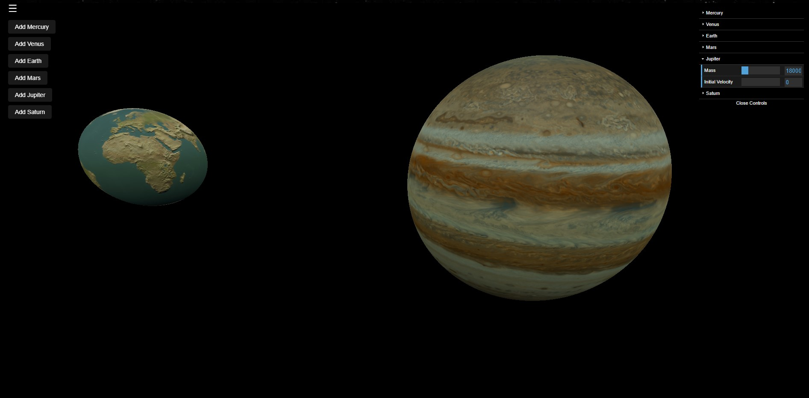

Celestial Mechanics - Interactive Orbital Simulator
Simulate Orbits with planets throughout our solar system with the Celestial Mechanics simulator! Embark on your physics journey with:
- Realistic Orbital Dynamics: Explore the intricacies of celestial mechanics with accurate orbital simulations. Each planet reacts dynamically to gravitational forces, resulting in realistic and visually stunning orbits.
- User-Defined Initial Velocities: Take control of the cosmos by setting the initial velocities of planets. Use an intuitive GUI to adjust the magnitude and direction of the velocities, allowing for endless possibilities in crafting unique planetary trajectories.
- Responsive User Interface: Seamlessly navigate through the cosmos with an intuitive user interface powered by dat.gui. Use interactive controls to add planets, adjust masses, and visualize the gravitational dance unfolding in real-time.
- Right click on the simulation and click "Inspect" to track velocities and observe gravitational forces in real time!
